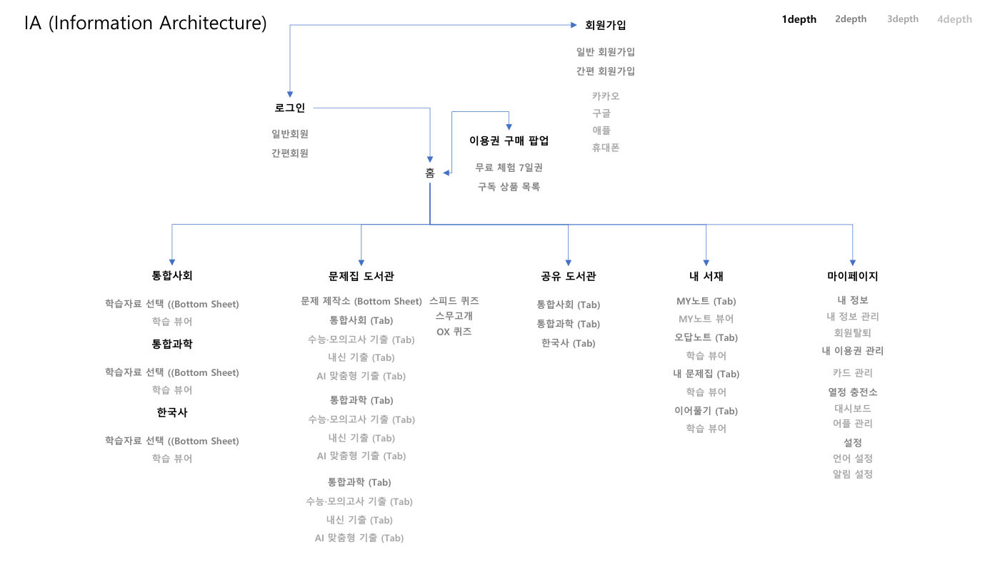
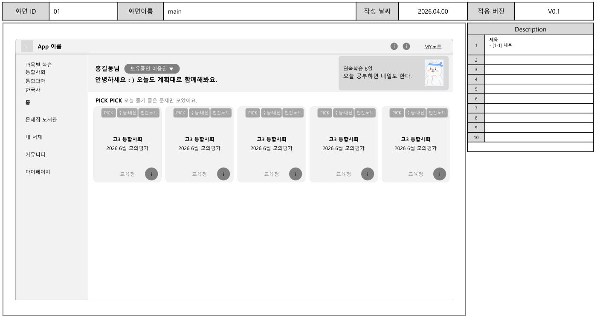

종이 참고서를 AI 학습 서비스로 바꾸는 전략을 8주 만에 수립하고 AI 기능 5종을 정의했습니다.
기여도
AI 기능 기획 총괄주도 3건
역할
AI 기능 기획
발주
예스24
기간
2026.04 ~ 2026.06
역할 및 기여도
- [주도]AI 학습 기능 5종 정의100%
- [주도]와이어프레임과 사용 시나리오 기획100%
- [주도]인터뷰 질문지와 요구사항 정리100%
[주도] 직접 책임지고 수행 / [협업] 다른 담당자와 함께 수행. 오른쪽 숫자는 해당 과업에서 본인 비중
성과
- 8주착수부터 최종보고서까지
- 5종AI 학습 기능 정의
- 2단계2026, 2027 구축 로드맵
문제와 해결
학습자의 불편정의한 AI 기능
- 해설을 보려면 학습 흐름이 끊김뷰어 안에서 바로 보는 단계별 힌트와 해설
- 무엇을 언제 공부할지 계획하기 어려움AI 학습 플래너와 오늘의 학습 미션
- 핵심만 빠르게 복습하기 어려움3분, 10분, 시험 대비 핵심 노트 생성
- 내 학습 상태를 알기 어려움커리큘럼 대비 학습 리포트
진행 방식
이해관계자 인터뷰 2회→요구사항과 기능 목록→와이어프레임→AI 엔진 구조→로드맵과 사업비
작업물


산출물
- ISMP 최종보고서 v1.4
- AI 기능 정의서
- 와이어프레임 v0.5
- 인터뷰 결과
- 사업비 산출